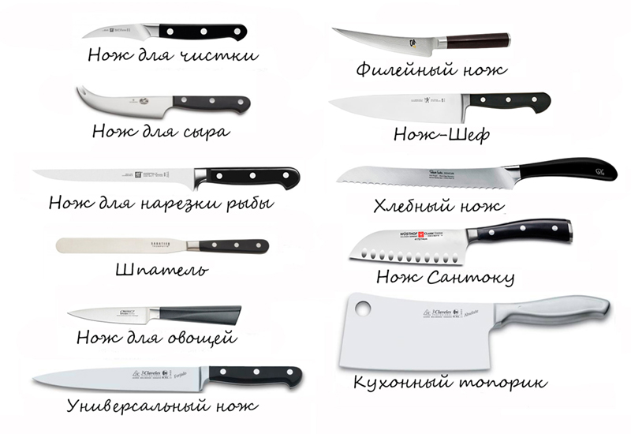
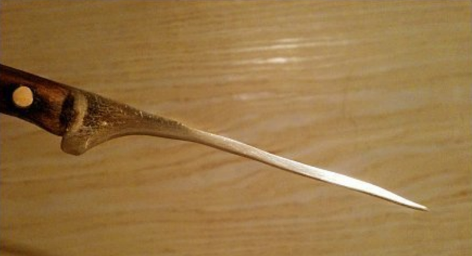

О несовместимости женщин с кухонными ножами
 Для начала давайте предупрежу всех сразу - я не сексист, не считаю, что место женщины на кухне, и не хочу никого обидеть, но вот вам моё утверждение, основанное на личных наблюдениях: подавляющее большинство женщин не умеют пользоваться кухонными ножами. Впрочем, как и большинство мужчин, просто статистически женщины используют кухонные ножи намного чаще мужчин. Если быть точнее, они не понимают, в чём принципиальное различие кухонного и столового ножа и пользуются кухонным вместо столового направо и налево (что часто вызывает мой хорошо скрываемый гнев). Другими словами у множества людей напрочь отсутствует культура использования ножа.
Для начала давайте предупрежу всех сразу - я не сексист, не считаю, что место женщины на кухне, и не хочу никого обидеть, но вот вам моё утверждение, основанное на личных наблюдениях: подавляющее большинство женщин не умеют пользоваться кухонными ножами. Впрочем, как и большинство мужчин, просто статистически женщины используют кухонные ножи намного чаще мужчин. Если быть точнее, они не понимают, в чём принципиальное различие кухонного и столового ножа и пользуются кухонным вместо столового направо и налево (что часто вызывает мой хорошо скрываемый гнев). Другими словами у множества людей напрочь отсутствует культура использования ножа.
Типичные заблуждения простого обывателя в отношении ножей
1. Ножи постоянно тупые, потому что их не точат регулярно.2. Ножи постоянно тупые, не смотря на регулярную заточку, следовательно это хреновые ножи, нужно купить получше (читайте - подороже).
3. Ножи постоянно тупые, нужно купить суперточилку9000 - она точно поможет!
4. Ножи постоянно тупые, нужно отнести их на заточку в мастерскую.
Вторая стадия иногда приобретает форму бесконечного цикла покупки всё более и более дорогих ножей (Samura, Mikadzo и т.п.), но просветления достигают далеко не все их обладатели. При этом множество обывателей искренне верят в то, что если нож куплен, скажем, за семь тысяч рублей, то уж он точно должен разрезать мясо вместе с костями, доской, столешницей, бетонными перекрытиями пола и после этого им можно будет бриться и не точить его годами. Утрирую конечно, но общее направление мысли таково. Человек планирует купить кухонный нож за 12 тысяч, чтобы не точить его пару лет, потому что нож за 150 рублей приходит у него в негодность за неделю. И о чудо, кто бы мог подумать, но эта математика не работает, если вы не умеете правильно использовать нож.
Все вышеописанные постулаты неверны полностью или частично и я сейчас объясню, почему.
Моя жена пользуется на кухне дешëвыми ножами вроде Satoshi или Tramontina, стоимость каждого из них не превышает 350ти рублей, на поддержание их острыми я трачу минуты три на нож раз в полтора-два месяца.
Пункт первый, а заодно и второй. Ножи постоянно тупые, не потому что их не точат, а потому что их старательно тупят. Вы когда-нибудь видели тарелку, исполосованную глубокими царапинами от ножа? Вряд ли. Никогда не задавались вопросом - почему? Всë очень просто. Твëрдость стекла, фарфора и керамики существенно выше твëрдости стали. Если бы было наоборот, вам бы пришлось раз в неделю менять все тарелки, а в царапинах оставались бы разлагающиеся микрочастицы пищи (поэтому, кстати, периодически нужно менять разделочные доски). Можно точить ножи сколько угодно, но стоит вам пару-тройку раз разрезать что-нибудь на тарелке, как вы сведëте все свои усилия к нулю. Моя тëща и мама иногда просят меня наточить им ножи, но это абсолютно бесполезное и бессмысленное занятие, поскольку острыми они останутся на пару - тройку дней. Привычки, выработанные десятилетиями уже не изменить. И кстати, при нормальном цикле использования ножи не нужно ТОЧИТЬ, их достаточно ПРАВИТЬ, что намного быстрее и легче, а так как на поддержание ножей в остром состоянии не требуется особых трудоатрат, то и необходимость в дорогих ножах отпадает. Единственное, что нужно помнить - не режьте кухонными ножами на тарелках. Для людей, придумавших разделочные доски из стекла вообще должен быть уготован отдельный котëл в аду.
Пункт третий. Если вы не умеете правильно точить ножи, то приобретение дорогого ножа лишь ненадолго отсрочит его превращение в бесполезный кусок металла с ручкой. После этого, вы будете думать, что нож "режет, но плохо", на самом деле он не режет - он рвёт или продавливает. Проверить просто - возьмите газетный лист одной рукой, а второй ножом попытайтесь его медленно разрезать вертикальным движением вниз. Либо нож будет резать, либо вы порвёте лист. Кстати, в комплекте с точилкой вряд ли кто-то положит набор прямых рук, поэтому кроме вас самих опыт заточки ножей никто в вашу голову не вложит. Какие-то минимальные усилия придётся сделать. Есть приспособления для заточки ножей с карбидными вствками в виде двух наборов чередующихся круглых шайб или поставленных крест накрест прямоугольных резцов - это отличное приспособление для порчи режущей кромки ножа и ускоренного его износа. Крайне не рекомендую к приобретению.
Пункт четвëртый. Мастерские, в которых производят заточку ножей и инструмента, бывают разные. Вряд ли дядя Вася, к которому приходят вышеописанные обыватели, будет на каждый кухонник времëн ссср, тратить несколько часов - на его переточку, выведение спусков, правку, доведение на пасте, полировку и т.п.. Существуют специальные станки для заточки ножей, которые позволяют заточить нож быстро и качественно и стоят они по несколько десятков тысяч рублей. Но зачем, если можно заточить его на обычном точильном станке за пару-тройку тысяч, который в подобных мастерских уже есть? Или всë-таки нельзя? Можно конечно, но после такой "заточки" ваш нож начнëт тупиться намного быстрее. Дело в том, что камень, закреплëнный на точильном станке вращается с высокой скоростью (в отличие от камня на специализированном станке), не погружён в ёмкость с водой, которая охлаждает и смачивает камень, он быстро снимает металл (в том числе и много лишнего металла, наличие которого могло бы продлить эксплуатацию вашего ножа ещë на годы), но при этом энергия, выделяющаяся в результате трения лезвия о камень такова, что лезвие быстро нагревается до достаточно высокой температуры. При создании ножа в соответствии с маркой стали производится его закалка. То есть, нагрев до СТРОГО ОПРЕДЕЛËННОЙ температуры на нужный период времени и затем БЫСТРОЕ охлаждение в нужной среде (воде, масле, жидком азоте - опять же в зависимости от марки стали). При нагревании металл расширяется, а затем при резком охлаждении верхние слои металла быстро сужаются и сжимают внутренние слои, что повышает твëрдость клинка. Если процесс закалки не произведëн должным образом или уже прошедший закалку нож будет нагрет, а затем плавно примет температуру окружающей среды, то его характеристики будут существенно хуже. И, соответственно, нож станет держать заточку в несколько раз меньшее время.
Виды кухонных ножей
С четырьмя основными пунктами закончили. Двигаемся далее. Всë вышеописанное можно отнести к кухонным ножам с плейн лезвием (то есть, с лезвием, на котором отсутствует серрейтор или зубчики, если угодно). Ярким представителем таких ножей является нож, называемый "шефом". Но есть и множество других типов ножей и это ведь неспроста.
Микроскопом вполне можно забивать гвозди, но это неудобно и нецелесообразно. Кувалда больше похожа на молоток, чем микроскоп, конструкция у неë примерно такая же, как и у молотка, но ей всë ещë жутко неудобно забивать обойные гвоздики. С ножами примерно так же. Существуют ножи для хлеба, для сыра, для масла, для фруктов, столовые ножи (как раз созданные для использования на тарелке) и т.п.. Если вы пытаетесь резать ножом мясо с массивными твëрдыми костями, то это как минимум глупо и напоминает попытку опасной бритвой перепилить кирпич. Для каждой задачи существует свой инструмент. Шеф среднего размера просто является наиболее универсальным ножом, способным заменить на кухне с той или иной степенью удобства множество ножей других типов, поэтому используется чаще всего и, как следствие, быстрее теряет остроту. Но в отличие от других типов ножей, шефа проще и быстрее всего можно вернуть в острое состояние.

Не нашёл более подходящей иллюстрации, но к тому что выше я бы добавил нож для фруктов - имеет узкое короткое серрейторное лезвие. И нож для сыра я советовал бы брать такой:
"Окна" на спусках ножа позволяют намного легче нарезать сыр за счёт того, что мЕньшая по площади его поверхность прилипает к плоскости лезвия.
Ахтунг! Керамические ножи!
Отдельного упоминания стоят керамические ножи. Для ножа существенными характеристиками являются не только твëрдость стали, но ещë и упругость и хрупкость. Чем больше в стали углерода, тем он более твëрдый (то есть, дОльше сохраняет заточку), но в то же время и более хрупкий, то есть, подверженный сколам. Если брать керамику, то она твëрже стали, но при этом намного более хрупкая. Догадайтесь, что произойдëт, когда вы будете резать керамическим ножом мясо с костями или что-либо иное на тарелке или стеклянной разделочной доске? Правильно! Так или иначе от лезвия будут откалываться куски различной величины (при использовании стального ножа вероятность скола намного меньше, потому что сталь более пластична). Куда попадают эти куски? Прааавильно! В вашу пищу! Замечу, что это в первую очередь куски лезвия, так как режущая кромка лезвия - самая тонкая и самая хрупкая часть. Что мы делаем с пищей? Мы еë едим! Неожиданно, правда? Как влияет соляная кислота в нашем пищеводе на керамику? Да никак! С тем же успехом можете разбить лампу накаливания и есть куски битого стекла. Подозреваю, это крайне полезно для организма! У вас есть керамический нож в хозяйстве? Осмотрите внимательно его режущую кромку. Наверняка вы найдëте несколько небольших сколов, если не соблюдаете необходимые правила работы с керамическим ножом. А ещë гениальное решение - подарить керамический нож своей маме или бабушке. Как я уже писал выше, привычки, сформированные десятилетиями не изменить. Что бы вы не рассказали, скорее всего они покивают головой, во всëм с вами согласятся, но будут относиться к керамическому ножу как к обычному (пытаться открывать им консервы, точить его на обычном камне с нажимом - не точится ведь, резать на тарелках и т.п..) а через пару месяцев вы обнаружите на кухне у них такое.
Плюс, стоит неаккуратно бросить керамический нож в раковину, как вы получите два ножа размером поменьше, но вас это не обрадует.
Керамический нож предназначен исключительно для резки мягких продуктов. Например, овощей, фруктов, не содержащих костей, филе. И резать необходимо без нажима на деревянной или бамбуковой доске. Если вам нужно приложить усилие для нарезания чего-либо, то это задача не для керамического ножа!
Отдельная песня - это заточка такого ножа. Тут и сноровки нужно больше и затачивающий инструмент должен быть с алмазным напылением. Далеко не каждый камень возьмëт керамику, а если и возьмёт, возиться будете долго. Соответственно и в мастерских заточка керамического ножа будет стоить уже совсем других денег. Самый "полезный совет", который я видел на всяких сайтах и за который следовало бы расстреливать на месте - это заточка керамического ножа на обычном заточном станке. Да, там указано, что действовать нужно с осторожностью и на самых низких оборотах. Но позвольте, мать вашу, какой заточной станок может выдать настолько минимальные обороты, при которых это можно назвать безопасным? Специализированные станки - могут. Тормек например, но я не верю в то, что вы ради этого готовы раскошелиться на несколько десятков тысяч. При использовании точильного станка для заточки керамического ножа при неудачном стечении обстоятельств вы запросто можете стать инвалидом. Дайте-ка угадаю, вы ведь любите оба своих глаза примерно одинаково? И мучительный способ самоубийства в ваши планы на неделю тоже не входит?
Чем правка отличается от заточки?
Правка ножа снимает очень тонкий слой металла по сравнению с заточкой. Заточка используется если нож очень тупой или если на лезвии есть сколы либо замины. Правкой это тоже можно свести на нет, но у вас на это уйдут сотни часов возвратно-поступательных движений при полном отсутствии удовлетворения.
Чем править ножи?
Для правки ножей используются мусаты. Они бывают стальными, либо керамическими (керамические намного долговечнее и эффективнее). Бывают с рукояткой и без, первый вариант удобнее, второй - компактнее.
В качестве походно-карманного варианта рекомендую советский диодный мост КЦ109а. Если найдёте в радиодеталях в своём городе - берите не раздумывая, стоит копейки (я брал по 25 рублей), а работает лучше множества мусатов, стоимостью от полутора тысяч рублей и дороже. Сам ими регулярно пользуюсь. Так же иногда всплывает на авито.
Очистку керамических мусатов можно производить обычной губкой для посуды (жёсткой стороной) и фейри. Именно фейри, аос и прочие подобные средства почему-то почти не работают.
Чем точить ножи?
Для домашних нужд достаточно обычного дешёвого двухстороннего камня из ближайшего хозмага. Есть несколько нюансов:
- Камень нужно смочить.
- Сначала нужно точить на более грубой стороне, затем на более мелкодисперсной.
- Камень нужно зафиксировать на плоскости, чтобы он не двигался, поэтому лучше брать более массивный камень и подкладывать силиконовый ровный коврик.
- Действовать нужно без нажима.
- Поверхность камня должна представлять собой ровную плоскость. Если камень выработался неравномерно - проще заменить на новый.
- Главное - выдерживать один и тот же угол. Точно у вас не получится, но огрехи исправит правка. Стараться выдерживать угол в любом случае надо.
- Выработка одной стороны абразива не должна попадать на другую. При смене сороны ополосните нож и камень водой. Перед правкой так же промойте нож.
Более продвинутые варианты
Между простым абразивным камнем и станком для заточки за несколько десятков тысяч рублей есть множество других вариантов. Например, японские водные камни. Принцип работы с ними примерно такой же, что и с обычными камнями, но стоят они в десятки и сотни раз дороже (в среднем от 4 до 20 тысяч рублей за камень и обычно их используется минимум три). Это больше подходит для ценителей, которые доводят нож до состояния, в котором он может снимать стружку с волоса. На кухне это совершенно ни к чему. Между просто острым ножом и ножом очень острым может лежать несколько часов времени кропотливой работы, при этом очень острый нож станет просто острым за пару дней, а еду он разделять будет практически так же. Помимо камней существуют бруски в виде пластикового основания, на котором приклеена металлическая пластина с алмазным напылением. В контексте наших задач - так же не советую их брать. Хорошие вроде DMT будут стоить дорого, дешёвые китайские очень быстро теряют абразив, "лысеют". Но это единственный пожалуй вариант, на чём можно в домашних условиях заточить керамический нож. Сразу скажу, если на лезвии есть сколы, то процесс их стачивания может занять несколько часов, а то и дней. Лучше отдать в хорошую мастерскую, либо прсто купить новый нож, если он был не очень дорог.
Помимо камней и абразивов с алмазным напылением, есть различные наборы для заточки ножей. Их задача заключается практически в одном - держать за вас угол и предоставить вам набор камней с разным размером рабочего зерна. Например, Lanksy. Пробовал, не советую. Удобство работы крайне сомнительное, требует особых навыков.
Edge Pro Apex - посоветовать могу, но лучше взять китайские аналоги и доработать (как минимум сэкономите тысяч 7-8). Навыков такая система требует порядочно меньше, а удобство и качество получаемого результата - намного выше. О том, как найти правильный китайский аналог Apex и доработать такое устройство, плюс о нюансах работы с ним можно написать отдельную статью, если кому-то интересно - дайте мне знать. Китайский аналог будет стОить около полутора - двух тысяч рублей, доработка - ещё около тысячи.
Но лучший совет остаётся прежним - просто не доводить ножи до того состояния, чтобы их приходилось точить, проще вовремя править режущую кромку, это сэкономит вам массу времени и сил.
Если в ящике вашего кухонного стола вы обнаружили наследие СССР с заминами и бликами по всей режущей кромке или что-то похожее на это

Бегите, глупцы! То честное слово - проще купить новый недорогой набор ножей, отправив старые на помойку.
Как точить и править на камне и мусате?
Лучше один раз увидеть, чем сто раз услышать. Технология сто раз разжёвана. Подобрал видео, которое считаю годным. Кратко, по существу и технически верно.
https://youtu.be/WMA0D0YSf3g
Для тренировки сначала лучше взять нож, который не жалко. Сначала показана работа мусатом, затем на камне. На заднем плане, кстати, можно увидеть несколько тормеков или подобных заточных станков, на столе - Edge Pro.
Как понять, какой угол нужно выдерживать?
Всё достаточно просто. Кладёте плоскость лезвия ножа на плоскость камня и медленно поднимаете обух, пока щель между режущей кромкой и плоскостью камня не пропадёт. Это и есть тот угол, который вам необходимо стараться выдерживать, если только вы не хотите изменить этот угол (это опять таки требует долгих монотонных действий и навыков, поэтому не советую, на EdgePro аналогах это делается проще).
Когда заканчивать точить и как понять, надо ли точить?
Возьмите нож за рукоять, поверните режущей кромкой к себе так, чтобы на неё падал свет у вас из-за плеча или сверху. Аккуратно изменяйте угол ножа по отношению к источнику света. Пока видите блики, нож можно точить на грубой стороне камня. Если бликов нет, переходите на вторую сторону, на ней можно долго не задерживаться, пары минут достаточно, затем можно переходить к правке. Ну и после правки тест на бумаге.
Итоги
0. Не режьте кухонным ножом на стекле, фарфоре и керамике.
1. Для каждой задачи используйте свой инструмент, не допускайте нецелевого использования ножа. Не открывайте ножом консервные банки, не закручивайте винтики в очках, не продавливайте ножом пробку в винную бутылку, не снимайте изоляцию с проводов и т.п.. Для всего этого используйте соответствующие инструменты. (с) Кэп
2. Резать сыр ножом для сыра и фрукты ножом для фруктов не только правильнее, но и удобнее. (с) тот же Кэп
3. Дорогой нож на кухне не нужен.
4. Если вы не уверены в адекватном восприятии своих близких или в своей аккуратности, лучше воздержитесь от приобретения керамического ножа.
5. Не доводите нож до состояния, когда его нужно точить. Ограничьтесь своевременной правкой ножа.
6. Если вы хотите отдать нож в мастерскую, попросите показать, на чём его собираются точить. Если это точильный станок - ищите другое место.
7. Если хотите научиться точить ножи самостоятельно, посмотрите видео, затем потренируйтесь сначала на старом ноже, который вам не жалко.
Теги: knifes